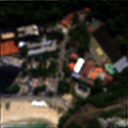
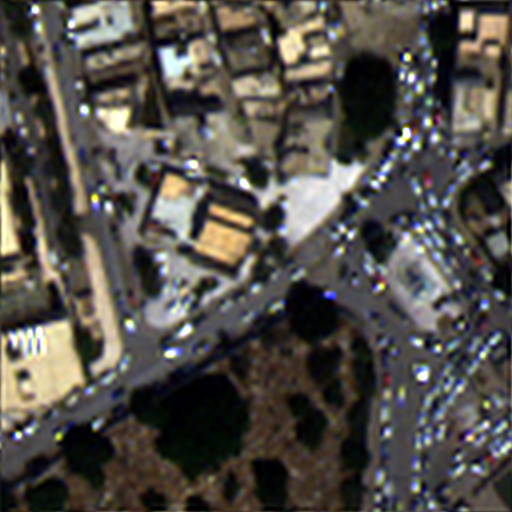
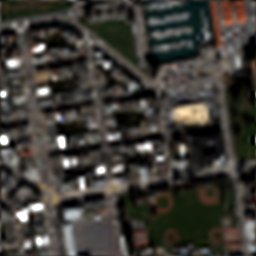
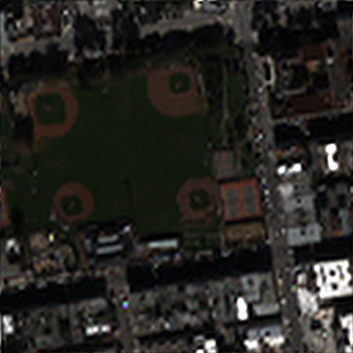
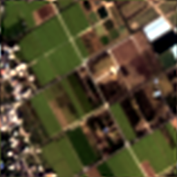

Conventional methods for PAN-sharpening often struggle to restore fine details due to limitations in leveraging high-frequency information. Moreover, diffusion-based approaches lack sufficient conditioning to fully utilize Panchromatic (PAN) images and low-resolution multispectral (LRMS) inputs effectively. To address these challenges, we propose an uncertainty-aware knowledge distillation diffusion framework with details enhancement for PAN-sharpening, called U-Know-DiffPAN. The U-Know-DiffPAN incorporates uncertainty-aware knowledge distillation for effective transfer of feature details from our teacher model to a student one. The teacher model in our U-Know-DiffPAN captures frequency details through freqeuncy selective attention, facilitating accurate reverse process learning. By conditioning the encoder on compact vector representations of PAN and LRMS and the decoder on Wavelet transforms, we enable rich frequency utilization. So, the high-capacity teacher model distills frequency-rich features into a lightweight student model aided by an uncertainty map. From this, the teacher model can guide the student model to focus on difficult image regions for PAN-sharpening via the usage of the uncertainty map. Extensive experiments on diverse datasets demonstrate the robustness and superior performance of our U-Know-DiffPAN over very recent state-of-the-art PAN-sharpening methods.
The overall pipeline of U-Know-DiffPAN for PAN-sharpening. Our framework operates in two main stages: (i) pre-training the FSA-T within a diffusion process to produce an initial prediction alongside an uncertainty map that identifies spatially weak regions; and (ii) training the FSA-S by leveraging this uncertainty map to guide the FSA-S in refining these regions through the KD.
Architecture of FSA-T block
Quantitative comparison on GF2 dataset. Comparison of different models on the GaoFen-2 (GF2) dataset. Blue indicates the second-best performance, while Red highlights the best-performing model.
Quantitative comparison on WV3 and QB dataset. Comparison of different models on the WorldView-3 (WV3) and QuickBird (QB) datasets. Blue indicates the second-best performance, while Red highlights the best-performing model.
PAN-sharpening results for the GF2 dataset under reduced resolution (RR) scenarios. The first row depicts the output HRMS images, while the second row highlights the Error Map between the output HRMS and the corresponding ground truth images.The Mean Absolute Error (MAE) values are presented alongside the Error Map.
PAN-sharpening results for the QB dataset under reduced resolution (RR) scenarios. The first row depicts the output HRMS images, while the second row highlights the Error Map between the output HRMS and the corresponding ground truth images. The Mean Absolute Error (MAE) values are presented alongside the Error Map.
PAN-sharpening results for the GF2 dataset under reduced resolution (RR) scenarios. The first row depicts the output HRMS images, while the second row highlights the Error Map between the output HRMS and the corresponding ground truth images. The Mean Absolute Error (MAE) values are presented alongside the Error Map.
PAN-sharpening results for the WV3 dataset under full resolution (FR) scenarios. The first row depicts the output HRMS images.
PAN-sharpening results for the WV3 dataset under full resolution (FR) scenarios. The first row depicts the output HRMS images.
PAN-sharpening results for the GF2 dataset under full resolution (FR) scenarios. The first row depicts the output HRMS images.